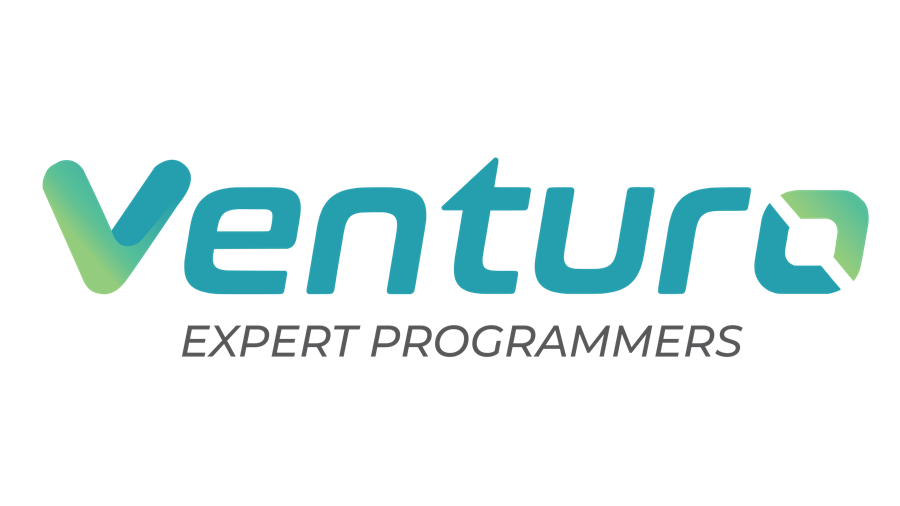

Perjanjian Induk Kerja Sama
Service Agreement
Venturo Dedicated Team
1Para Pihak
- PT Venturo Pro Indonesia, beralamat di Jl. Rinjani No. 26, Oro-oro Dowo, Kecamatan Klojen, Kota Malang, Jawa Timur 65119, dalam hal ini diwakili oleh Yulianto Frandi selaku CEO, selanjutnya dalam perjanjian ini disebut “Venturo”.
- Universitas Sebelas Maret (UNS), beralamat di Jl. Ir. Sutami No. 36A, Surakarta, Jawa Tengah, dalam hal ini diwakili oleh ______________________ selaku Pimpinan, selanjutnya dalam perjanjian ini disebut “Klien”.
Venturo dan Klien selanjutnya secara bersama-sama disebut “Para Pihak”.
2Masa Berlaku
Perjanjian ini berlaku sejak tanggal ditandatangani sampai dengan berakhirnya masa kerja sama, kecuali digantikan oleh Service Agreement baru yang disepakati oleh Para Pihak.
3Lingkup Pengerjaan
Perjanjian ini mengatur syarat dan ketentuan umum kerja sama antara Venturo dan Klien dalam penyediaan tim pengembang perangkat lunak dengan model Dedicated Team, yaitu tenaga profesional Venturo yang bekerja penuh waktu dan khusus untuk proyek Klien berdasarkan posisi dan jumlah orang. Komposisi tim, periode kerja, biaya, dan jadwal pembayaran untuk setiap proyek diatur dalam dokumen Penawaran Layanan beserta Lampiran Rincian Biaya (untuk proyek ini nomor VEN/PolicyLab/2026/001), yang menjadi bagian tidak terpisahkan dari perjanjian ini.
4Support Service
- Pekerjaan dilakukan di kantor Venturo di Jl. Rinjani No. 26, Oro-oro Dowo, Kec. Klojen, Kota Malang.
- Hari dan jam kerja operasional yang berlaku yakni Senin – Jumat, 08.00 – 17.00 WIB.
- Hari libur nasional dan cuti bersama mengacu pada kalender resmi yang ditetapkan oleh Pemerintah Indonesia, kecuali disepakati lain antara Venturo dan Klien berdasarkan kebutuhan proyek.
- Tim Dedicated mengerjakan pekerjaan sesuai prioritas backlog yang ditetapkan Klien bersama Technical Lead Venturo.
- Selama jam kerja operasional, Venturo menjamin respons melalui WhatsApp maksimal 15 menit. Untuk dukungan di luar jam kerja, Venturo akan berupaya merespons secepatnya dan memastikan respons tetap diberikan pada hari yang sama.
- Setiap kendala teknis atau bug diklasifikasikan berdasarkan dampak operasionalnya pada pengguna sebagai dasar urutan prioritas penanganan:
- Major Bug: gangguan yang menyebabkan sistem atau fitur utama tidak dapat digunakan; ditangani dengan prioritas pertama di atas pekerjaan lain.
- Minor Bug: gangguan ringan yang tidak berdampak signifikan terhadap operasional; ditangani sesuai prioritas backlog.
- Dalam hal terjadi kendala atau bug, Klien wajib memberikan akses dan informasi yang diperlukan untuk mempercepat proses penanganan.
5Komunikasi
Venturo menyediakan platform komunikasi dan kolaborasi berikut untuk koordinasi, diskusi, dan pemantauan perkembangan proyek:
- Space (Aplikasi ERP Venturo) — aplikasi ERP internal Venturo yang mencakup fungsi manajemen tugas, backlog, tiket, hingga monitoring OKR. Seluruh tim mencatat tugas harian dan backlog proyek pada aplikasi ini, dan Klien diberikan akses gratis untuk memantau progres pengembangan secara real-time.
- Grup WhatsApp — untuk setiap proyek dibuatkan grup WhatsApp khusus sebagai sarana komunikasi operasional harian, diskusi, koordinasi, serta penyampaian permintaan oleh Klien. Seluruh permintaan yang disampaikan melalui grup dicatat oleh tim Project Support ke dalam Modul Ticket di Space sebagai bentuk pertanggungjawaban dan pelacakan.
- Online Meeting (Google Meet/Discord) — fasilitas meeting daring untuk diskusi proyek, evaluasi sprint, atau kebutuhan lain sesuai kesepakatan. Jadwal meeting difasilitasi oleh tim Project Support.
- GitHub Repository — seluruh source code hasil pengembangan dikelola melalui repository GitHub untuk kolaborasi, version control, serta audit perkembangan kode.
6Project Management
Venturo menggunakan aplikasi internal yang dirancang untuk mendukung produktivitas, kolaborasi, dan evaluasi tim pengembang perangkat lunak:
- Project Development Management (space.venturo.id) — pengelolaan proyek, sprint, backlog, dan tiket dalam satu platform terintegrasi.
- Learning Management System — pengembangan kompetensi tim melalui pelatihan berkelanjutan dengan kurikulum yang disusun Tim R&D Venturo.
- Daily Issue Monitoring (timebox.venturo.id) — kontrol harian tim; setiap manajer memastikan setiap issue dikerjakan tepat dan dapat diselesaikan di hari yang sama.
- Objective and Key Result — penilaian kinerja setiap programmer untuk menjaga kualitas dan memberikan pelatihan bagi yang belum optimal.
7Metode Development
Venturo menerapkan metodologi pengembangan perangkat lunak Scrum (bagian dari kerangka kerja Agile), di mana pengembangan dilakukan secara bertahap dan berulang (iterative development). Pendekatan ini memungkinkan tim lebih adaptif terhadap perubahan kebutuhan dan masukan Klien selama siklus proyek, serta memastikan peningkatan berkelanjutan terhadap kualitas produk yang dikembangkan.
8Deployment Environment
Venturo menggunakan tiga (3) lingkungan terpisah untuk menjamin kualitas, keamanan, dan stabilitas aplikasi sebelum digunakan oleh pengguna akhir:
- Development Environment — area kerja tim pengembang untuk proses pemrograman dan eksperimen fitur tanpa memengaruhi sistem lain.
- Staging Environment — area simulasi yang dibuat semirip mungkin dengan sistem produksi untuk pengujian fungsi, integrasi, dan performa sebelum fitur dipindahkan ke produksi. Venturo menyediakan server Staging tanpa biaya tambahan.
- Production Environment — lingkungan final tempat aplikasi digunakan oleh Klien dan pengguna. Seluruh perubahan yang telah lolos pengujian di Staging di-deploy ke Production. Infrastruktur Production disediakan oleh Klien, atau melalui layanan Venturo Cloud apabila dipilih Klien pada Penawaran Layanan.
9Laporan Pekerjaan
Venturo melaporkan progres pengerjaan kepada Klien melalui Grup WhatsApp, Space, dan meeting review dengan ketentuan sebagai berikut:
- Laporan Harian — ringkasan pekerjaan yang diselesaikan, pekerjaan berjalan, dan kendala (blocker) dikirim setiap hari kerja.
- Meeting Review Mingguan — pembahasan hasil sprint, hasil pengujian (test run) beserta tindak lanjut error, rencana sprint minggu berikutnya, serta backlog dan issue yang perlu konfirmasi Klien.
- Laporan Bulanan — rekap keseluruhan pekerjaan dalam satu periode, termasuk rekap kehadiran dan pekerjaan setiap anggota tim.
10Biaya Out of Pocket
- Apabila pengerjaan dilakukan di lokasi atas permintaan Klien, maka Klien menanggung dan menyiapkan seluruh biaya akomodasi, transportasi, dan penginapan.
- Biaya belum termasuk penggunaan tools atau layanan pihak ketiga, yang hanya digunakan dengan persetujuan tertulis terlebih dahulu dari Klien.
11Pekerjaan di Luar Jam Kerja
Permintaan pekerjaan di luar hari dan jam kerja operasional (Sabtu, Minggu, dan hari libur nasional) dilakukan dengan persetujuan tertulis terlebih dahulu dari Klien, dengan biaya lembur yang diajukan Venturo dan disetujui Klien sebelum pekerjaan dilakukan.
12Kerahasiaan
- Para Pihak wajib menjaga dan menyimpan segala informasi dalam rangka pelaksanaan perjanjian ini (selanjutnya disebut “Informasi”) sebagai rahasia, dan masing-masing pihak tidak boleh mengungkapkannya kepada pihak lain dengan cara apa pun tanpa persetujuan tertulis dari pihak lainnya, kecuali hal-hal yang merupakan milik umum (public domain) atau untuk keperluan pelaporan sebagaimana diminta oleh pejabat pemerintah yang berwenang.
- Para Pihak tidak diperkenankan memberitahukan, membuka, atau memberikan informasi menyangkut isi perjanjian kepada badan hukum maupun perorangan tanpa izin tertulis dari pihak lainnya, kecuali:
- diminta oleh instansi pemerintah yang berwenang mengatur atau mengeluarkan izin tentang hal-hal yang diperjanjikan; atau
- diperintah oleh badan peradilan atau instansi pemerintah lain yang berhubungan dengan penegakan hukum secara tertulis, resmi, dan merupakan putusan final.
- Para Pihak menjamin untuk menyimpan asli maupun salinan dokumen dan/atau surat-surat yang berkaitan dengan perjanjian ini.
- Para Pihak wajib memastikan seluruh pimpinan dan staf mematuhi kewajiban menjaga kerahasiaan, baik selama berlangsung maupun setelah perjanjian ini berakhir.
- Kewajiban kerahasiaan tetap berlaku sekalipun perjanjian ini berakhir. Apabila terbukti salah satu pihak membocorkan Informasi dan mengakibatkan kerugian bagi pihak lainnya, pihak yang membocorkan dapat dikenakan upaya hukum sesuai peraturan perundang-undangan.
13Hak Kekayaan Intelektual
- Para Pihak sepakat bahwa Hak atas Kekayaan Intelektual (“HKI”) adalah seluruh hak cipta, paten, deskripsi teknis (termasuk source code), merek dagang, merek jasa, hak desain, hak desain industri, hak database, nama dagang, hak yang melindungi rahasia dagang dan informasi rahasia, perangkat lunak, naskah, kode dalam bahasa apa pun, temuan, ide, proses, metode, dokumen, laporan, dan materi lainnya dalam bentuk atau media apa pun yang berkaitan dengan pelaksanaan perjanjian ini, baik yang ada saat ini maupun yang akan diciptakan di kemudian hari.
- Para Pihak sepakat bahwa setiap HKI yang timbul atas pelaksanaan perjanjian ini sepenuhnya menjadi milik Klien, dan Venturo berkewajiban menyerahkan HKI tersebut kepada Klien, dengan memperhatikan ketentuan ayat 4.
- Seluruh HKI yang berkaitan dengan perangkat lunak diserahkan oleh Venturo kepada Klien pada saat serah terima pekerjaan, setelah seluruh kewajiban pembayaran dinyatakan lunas.
- Kepemilikan HKI oleh Klien tidak membatasi hak Venturo untuk menggunakan kembali komponen umum, pustaka kode, kerangka dasar aplikasi (Setup Core Venturo/boilerplate), serta pengetahuan dan metode teknis yang tidak spesifik pada bisnis Klien untuk proyek lain, sepanjang tidak memuat Informasi rahasia, data, maupun fitur dan logika bisnis yang khusus dikembangkan untuk Klien.
- Seluruh data dan informasi yang diterbitkan, diperoleh, dan dikumpulkan melalui aplikasi adalah milik Klien.
14Keterlambatan Pengerjaan
Jika pekerjaan mengalami keterlambatan dari target yang disepakati Para Pihak, penyelesaian dilakukan dengan mekanisme berikut:
- Jika keterlambatan diakibatkan oleh Venturo (misalnya kualitas atau kapasitas anggota tim), Venturo melakukan perbaikan kinerja dan/atau menambah dukungan sumber daya tanpa biaya tambahan, dan Para Pihak menyepakati target baru.
- Jika keterlambatan diakibatkan oleh Klien (misalnya keterlambatan persetujuan, data, konten, atau akses pihak ketiga), Para Pihak menyepakati target baru, dan biaya bulanan Dedicated Team tetap berjalan sesuai Penawaran Layanan.
15Pemenuhan dan Penggantian Talent
- Venturo menyediakan anggota tim sesuai posisi, level, dan jumlah orang yang tercantum dalam Penawaran Layanan.
- Seluruh hubungan kerja anggota tim adalah dengan Venturo dan diatur dalam perjanjian kerja tertulis berdasarkan ketentuan perundang-undangan ketenagakerjaan. Seluruh urusan gaji, THR, tunjangan, BPJS, PPh 21, kompensasi PKWT, serta kewajiban ketenagakerjaan lainnya menjadi tanggung jawab Venturo.
- Apabila anggota tim tidak memenuhi kualifikasi atau melakukan pelanggaran yang dapat merugikan Klien, Klien berhak meminta penggantian dengan memberitahukan alasannya, tanpa biaya tambahan. Penggantian dilakukan paling lambat 7–14 hari.
- Apabila anggota tim cuti, sakit, atau berhalangan, Venturo tetap menjamin keberlangsungan pekerjaan melalui dukungan Technical Lead atau pengganti sementara tanpa biaya tambahan.
- Penambahan atau pengurangan anggota tim diajukan secara tertulis dan dituangkan dalam addendum Penawaran Layanan.
16Perekrutan
- Klien sepakat untuk tidak melibatkan, merekrut, atau mempekerjakan pegawai Venturo selama masa berlakunya perjanjian ini, serta tidak memberikan insentif atau perjanjian apa pun yang bertujuan mengalihkan pegawai Venturo dari pekerjaannya.
- Apabila pegawai yang bersangkutan bersedia direkrut, Klien diperbolehkan merekrutnya dengan dikenakan biaya pengalihan sebesar 6 (enam) kali gaji bulanan terakhir pegawai yang bersangkutan.
17Terminasi Kontrak
- Klien berhak mengakhiri perjanjian ini atas dasar performa Venturo yang, dengan bukti sah dan tertulis, tidak memenuhi standar layanan secara berturut-turut meskipun telah dilakukan upaya perbaikan, dengan pemberitahuan tertulis paling lambat 30 (tiga puluh) hari sebelum tanggal efektif pengakhiran.
- Klien berhak mengakhiri perjanjian ini atas dasar pertimbangan bisnis Klien dengan pemberitahuan tertulis paling lambat 60 (enam puluh) hari sebelum tanggal efektif pengakhiran.
- Penghentian Venturo Cloud mengikuti ketentuan pemberitahuan 30 (tiga puluh) hari sebagaimana diatur dalam Penawaran Layanan.
- Klien menyelesaikan seluruh kewajiban finansial yang telah jatuh tempo, termasuk tagihan layanan sampai tanggal terminasi.
- Seluruh pembayaran yang telah diterima, termasuk Engineering Kick-off, bersifat final dan tidak dapat dikembalikan.
- Venturo melakukan serah terima pekerjaan sesuai ketentuan Berita Acara Serah Terima.
18Berita Acara Serah Terima Pekerjaan
- Sebelum masa kontrak berakhir, Venturo melakukan serah terima kepada Klien agar seluruh hasil kerja dapat digunakan Klien secara mandiri, meliputi:
- Source code: file source code dan akses repository;
- Dokumentasi teknis: arsitektur sistem, instalasi & deployment, dan integrasi API;
- Dokumentasi pengujian: skenario uji dan repository automation test;
- Akses environment: staging atau production, serta kredensial akun superadmin aplikasi;
- Penghapusan atau pengembalian seluruh informasi rahasia sesuai ketentuan kerahasiaan; dan
- Penandatanganan Berita Acara Serah Terima (BAST) oleh Para Pihak.
- Apabila Klien belum menyelesaikan seluruh kewajiban pembayaran, Venturo berhak menunda serah terima source code, dokumentasi teknis, dokumentasi pengujian, dan akses environment hingga seluruh invoice dinyatakan lunas.
19Garansi
- Selama periode kerja, perbaikan bug atas hasil kerja tim dilakukan oleh Dedicated Team sebagai bagian dari pekerjaan bulanan tanpa biaya tambahan.
- Setelah periode kerja berakhir, Venturo memberikan garansi perbaikan bug tanpa biaya tambahan selama 30 (tiga puluh) hari kalender sejak tanggal berakhirnya periode kerja.
- Garansi tidak mencakup permintaan perubahan fitur, penambahan fungsi baru, gangguan akibat integrasi atau layanan pihak ketiga, maupun kesalahan penggunaan di luar spesifikasi yang disepakati.
20Pembatasan Tanggung Jawab
Venturo tidak bertanggung jawab atas kerugian tidak langsung, kerugian konsekuensial, atau kerugian pihak ketiga akibat penggunaan perangkat lunak.
21Force Majeure
Apabila terjadi gempa bumi, bencana alam, tanah longsor, atau kejadian lain yang secara wajar berada di luar kendali Para Pihak sehingga menyebabkan gagal atau tertundanya pelaksanaan kewajiban, Para Pihak sepakat untuk meninjau kembali perjanjian ini.
22Penyelesaian Perselisihan
- Semua perselisihan dan hal-hal yang belum diatur dalam perjanjian ini diselesaikan secara musyawarah untuk mufakat.
- Apabila perselisihan tidak dapat diselesaikan secara musyawarah, Para Pihak sepakat menyelesaikannya melalui Badan Arbitrase Nasional Indonesia (BANI) sesuai hukum Republik Indonesia.
23Persetujuan
Dengan menandatangani dokumen ini, kedua belah pihak menyatakan telah membaca, memahami, dan menyetujui seluruh syarat dan ketentuan yang tercantum di dalamnya. Dokumen ini berfungsi sebagai perjanjian induk (Service Agreement) yang diikuti dengan dokumen Penawaran Layanan untuk setiap proyek.
Ditandatangani di Malang, pada tanggal ____________________ 2026.
Penyedia Layanan
PT Venturo Pro Indonesia
| Nama | Yulianto Frandi |
| Jabatan | CEO |
| Tanggal | 22 Oktober 2026 |
Klien
Universitas Sebelas Maret
Tanda tangan & stempel
| Nama | |
| Jabatan | Pimpinan |
| Tanggal | |